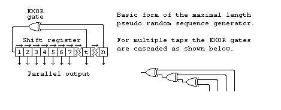
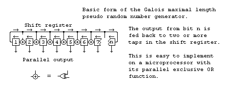

|
|
6502 8 bit PRNG. By Lee Davison. |
|
The code.This is a short peice of code that generates a maximal length, 8 bit, pseudo random number sequence. This is the 6502 version of Z80 random. A 32 bit 68k version can be found here.
Other number lengths.This routine is no great shakes in the speed stakes, it's just a demo of a usefull technique.
A maximal length pseudo random number generator is basically just a shif register with feedback from the later stages to generate the next input bit. The form for a generator of length n with feedback from t is shown below.

You don't have to limit the length to only 8 bits, any number of bits from two upwards will work if you chose the right feedback tap(s). Here is a table of some values.Faster, shorter method.
Bits [n] Tap(s) [t] Length Bits [n] Tap(s) [t] Length 2 1 3 3 2 7 4 3 15 5 3 31 6 5 63 7 6 127 8 6,5,4 255 9 5 511 10 7 1023 11 9 2047 15 14 32767 16 15,13,4 65535 17 14 131071 18 11 262143 20 17 1048575 21 19 2097151 22 21 4194303 23 18 8388607 24 23,22,17 16777215 25 22 33554431 28 25 268435455 29 27 536870911 31 28 2147483647 In the last case, with 31 bits, if you took a new value once a second the sequence wouldn't repeat for over sixty eight years. Even clocked at 1MHz it would still take over thirty five minutes to cycle through every state.
The above pseudo random number generator is known as a Fibonacci generator and, while it works, it turns out there is a much better generator to implement with a microprocessor.

The Galois generator needs only to test the state of one bit and that can be tested after the shift has been performed. The state of this bit determines whether the feedback term is exclusive ORed with the result. This single bit test and multiple bit feedback is easily done as can be seen from the code below.
You don't have to limit the length to only 8 bits, any number of bits from three upwards will work if you chose the right feedback value. Here is a table of some values that have been chosen to give a feedback value that fits in a byte, this makes implementation on an 8 bit micro as short as possible. For these values bit n is the least significant bit in the value and the tested bit is the bit shifted out from bit 1.
Bits [n] Feedback Length Bits [n] Feedback Length 3 $03 7 4 $03 15 5 $17 31 6 $27 63 7 $4B 127 8 $CF 255 9 $B7 511 10 $E7 1023 11 $EB 2047 12 $EB 4095 13 $BB 8191 14 $BB 16383 15 $DD 32767 16 $D7 65535 17 $AF 131071 18 $E7 262143 19 $AF 524287 20 $F3 1048575 21 $B7 2097151 22 $BB 4194303 23 $F3 8388607 24 $DB 16777215 25 $93 33554431 26 $B1 67108863 27 $B1 134217727 28 $E1 268435455 29 $C3 536870911 30 $AF 1073741823 31 $8B 2147483647 32 $AF 4294967295 This is now the form of sequence generator used to generate values for the RND() function in EhBASIC.
| Last page update: 24th January, 2005. | e-mail me
 |